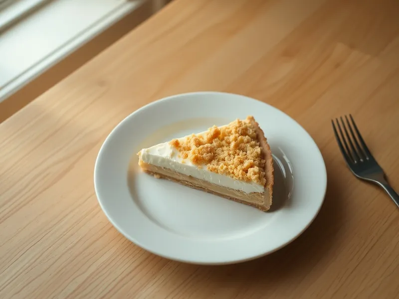

Королевская ватрушка с творогом
Песочная крошка снизу и сверху, а между ними нежная творожная начинка
180 мин8 порц.420 ккал на порциюБ 17 · Ж 18 · У 47Русская кухня
Открыть в приложении: порции, таймеры, список покупок
Продукты на 8 порц.
- Мука пшеничная250 г
- Сливочное масло120 г
- Сахар180 г
- Разрыхлитель1 ч. л.
- Творог 5%500 г
- Яйцо куриное3 шт
- Ванильный сахар1 шт
Как готовить
- Разотрите руками муку, 80 г сахара, разрыхлитель и холодное сливочное масло в мелкую крошку, 3-4 минуты.
- Взбейте творог с яйцами, оставшимся сахаром и ванильным сахаром блендером до однородной массы без крупных зёрен.
- Разогрейте духовку до 180 °C (средний жар). Высыпьте в форму диаметром 22-24 см половину крошки и слегка прижмите ладонью.
- Вылейте творожную начинку, сверху равномерно рассыпьте оставшуюся крошку.
- Выпекайте 40-45 минут, пока верх не зарумянится, а начинка в центре не перестанет дрожать.
- Остудите в форме 1 час, затем уберите в холодильник ещё на 1 час: так ватрушка нарежется аккуратными кусками.
Совет. Крошку не прессуйте сильно: верхний слой должен лежать свободно, тогда он получится хрустящим.